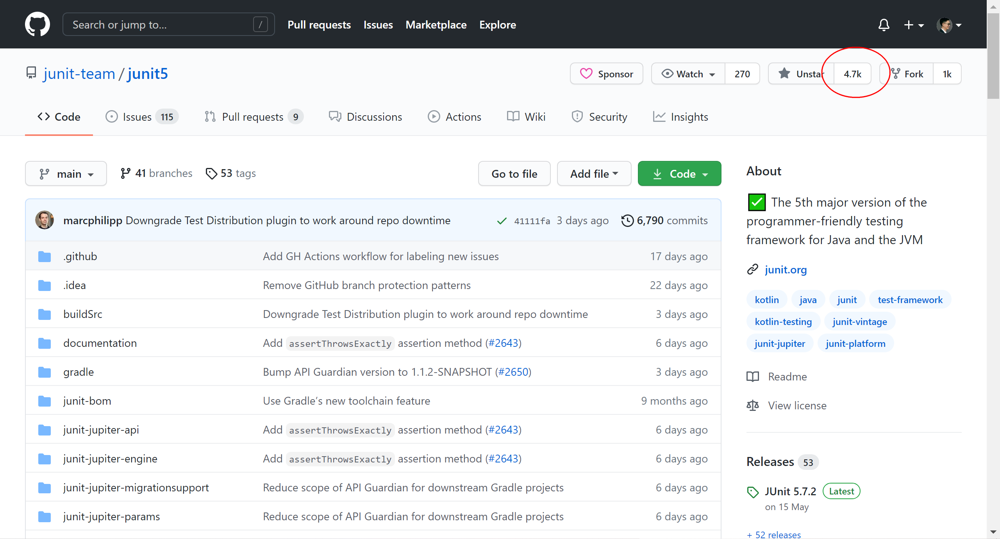
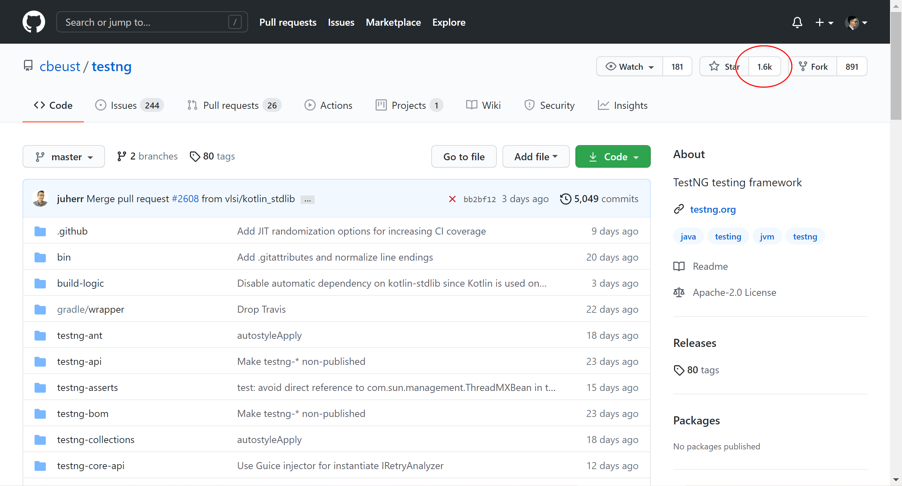

1 Java新一代单元测试框架JUnit5速览¶

为什么学JUnit5¶
Java技术栈的单元测试框架有两个：JUnit和TestNG，有种说法是TestNG比JUnit更强大，学TestNG就够了，但是当我打开GitHub看到star的时候，犹豫了：
JUnit

TestNG

相差了足足有3K之多。带着这个困惑，我在网上查阅了一番资料，原来JUnit5相较于JUnit4有了重大升级，已经包含了TestNG的所有功能。为了坚定我学JUnit的想法，我咨询了身边做Java开发的朋友，开发写UT都是用的JUnit。这两个理由足以让我开始对JUnit5的学习。
JUnit5是什么¶
跟之前的JUnit有所不同，JUnit5由三个子项目的模块组成：
JUnit5 = JUnit Platform + JUnit Jupiter + JUnit Vintage
JUnit Platform 在JVM上启动测试框架的基础，不仅支持Junit自制的测试引擎，其他测试引擎也都可以接入。提供了从命令行启动平台的Console Launcher，和支持JUnit4环境的JUnit4 based Runner。IDE一般都集成了JUnit Platform，比如IntelliJ IDEA。
JUnit Jupiter JUnit5新特性，结合了新的programming model和extension model，以便于在JUnit5中编写测试和扩展。提供了在平台上运行基于Jupiter测试的TestEngine。
JUnit Vintage 提供了在平台上运行基于JUnit3和JUnit4测试的TestEngine，照顾老的项目。
JUnit5新特性¶
使用JUnit Jupiter写测试¶
示例代码：
import static org.junit.jupiter.api.Assertions.assertEquals;
import example.util.Calculator;
import org.junit.jupiter.api.Test;
class MyFirstJUnitJupiterTests {
private final Calculator calculator = new Calculator();
@Test
void addition() {
assertEquals(2, calculator.add(1, 1));
}
}
注意这个导包的路径org.junit.jupiter.api，Jupiter就是JUnit5的新特性。
兼容JUnit4和JUnit3¶
JUnit Vintage提供了在平台上运行基于JUnit3和JUnit4测试的TestEngine，
并且新的包org.junit.jupiter避免了和JUnit4的org.junit在classpath上有任何冲突。
多IDE运行¶
JUnit能在IntelliJ IDEA、Eclipse、NetBeans、Visual Studio Code等IDE中运行。
从JUnit Jupiter扩展Model¶
示例：
@ExtendWith(RandomParametersExtension.class)
@Test
void test(@Random int i) {
// ...
}
给test方法注册了一个新的RandomParametersExtension。
更多高级用法¶
JUnit5提供了更多高级用法，比如JUnit Platform Launcher API和JUnit Platform Test Kit等，这些会在之后的文章逐一进行介绍。
小结¶
本文首先解释了为什么要学JUnit5，一是因为全新一代JUnit功能更加强大，二是Java开发写单元测试都是用的JUnit，然后介绍了JUnit5是什么以及它的新特性。学习JUnit，在单元测试这条路上，又往前迈了一步。